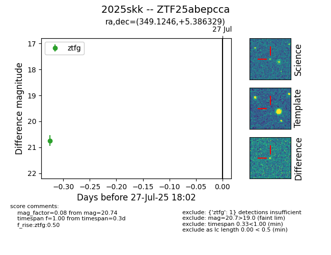

Target 2025skk at 2025-07-27 18:02, see:
FINK: fink-portal.org/2025skk
Lasair: lasair-ztf.lsst.ac.uk/objects/2025skk
ALeRCE: alerce.online/object/2025skk
TNS: wis-tns.org/object/2025skk
YSE: ziggy.ucolick.org/yse/transient_detail/2025skk
alt names
ZTF25abepcca (ztf,fink)
2025skk (tns,yse)
coordinates:
equatorial (ra, dec) = (349.1246,+5.38633)
galactic (l, b) = (84.1719,-50.20237)
photometry
last ztfg=20.74
1 ztfg detections
